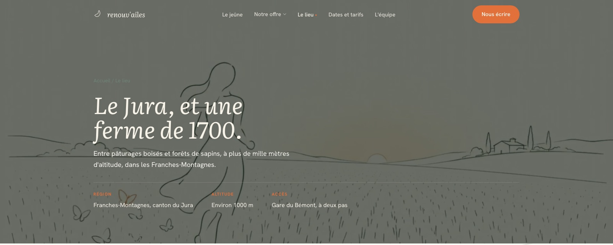
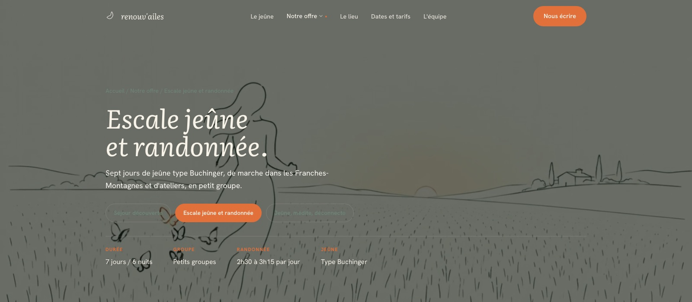
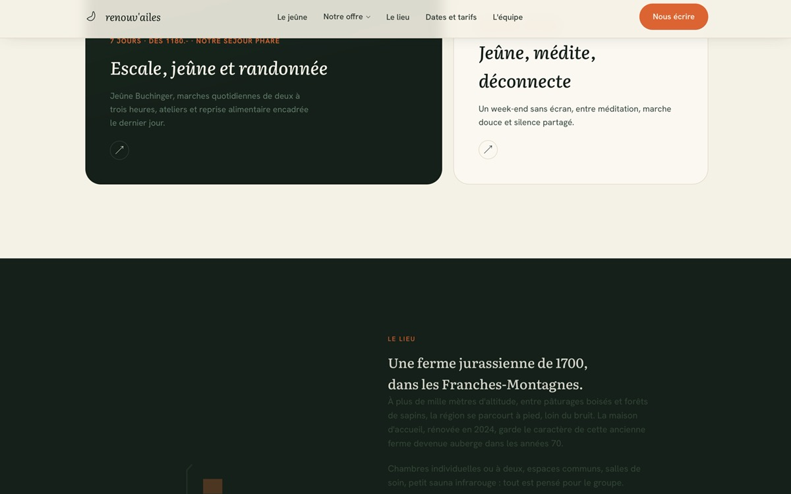
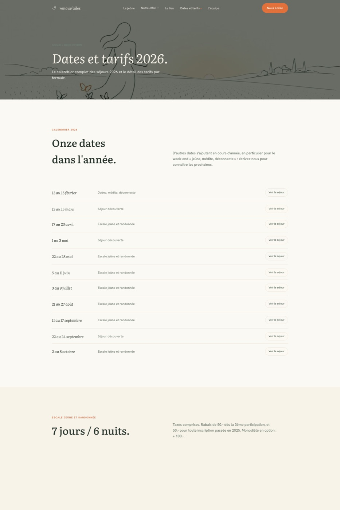

Valérie and Cédric run a fasting-and-hiking retreat out of a renovated 18th-century farmhouse in the Franches-Montagnes, Swiss Jura. There were no existing brand assets beyond a name: positioning, palette, typography, sitemap and motion language all had to be defined from scratch. We ran the market study, built the identity, and designed and developed the full site: three pieces of one engagement, covered below.
Brand & Digital Design
Renouv'ailes
Market study, brand identity and a 9-page editorial website for a fasting-and-hiking retreat in a renovated 18th-century Jura farmhouse.
01
Market study.
Before any design decision, a positioning study mapped the Swiss-Romand market for boutique hospitality sites, from generic templates to full-service agencies, to find where Renouv'ailes needed to sit to justify what the retreat itself promises.
The market splits into clear tiers, from CHF 400 templated one-pagers to CHF 15k+ full-agency builds, and competitor research turned up the same defaults everywhere in the wellness space: beige and kraft palettes, handwritten script, stock photography of feet on yoga mats. Ruling those out as much as any positive reference shaped the brief, and confirmed the offer needed a dedicated design system and a multi-page editorial architecture rather than a templated one-pager, before a single screen was designed.
Four market tiers
From CHF 400 templated one-pagers to CHF 15k+ full-agency builds, mapping where competitors sat exposed the gap between "cheap and generic" and "expensive and impersonal."
Wellness clichés to avoid
Competitor research turned up the same defaults everywhere: beige/kraft palettes, handwritten script, stock photos of feet on yoga mats. Direct input into ruling those out of the brand direction.
Scope, justified
The study confirmed the offer needed a dedicated design system and a multi-page editorial architecture, not a templated one-pager, before a single screen was designed.
02
Branding & identity: "Forêt & Aube."
A Jurassian pine forest at first light. The direction translates renouveler + ailes into color, warmth and a single moment of light.
The name already carries the idea: renouveler + ailes, shedding weight to feel light again, like taking flight. The direction translates that into a Jurassian pine forest at first light: dense, dark green grounding the body at rest, a break of dawn light for the clarity that follows, and a single warm accent for the momentum of leaving.
COLOR PALETTE
Pin profond
#16241C
Mousse
#3F5344
Ivoire
#F7F3E9
Ambre-corail
#E2703A
Ambre foncé
#C4592A
Bordure chaude
#E5DFCE
Pin profond and mousse carry the dark, restful ground; ivoire holds the light, waking counterpart. Ambre-corail is the sole accent, reserved for calls to action, with ambre foncé as its hover state and bordure chaude kept for hairlines only.
TYPOGRAPHY
Se délester, respirer, renaître.
Nous écrire
MARK
renouv'ailes
A single continuous line evoking an open wing, no literal feather or bird, paired with a lowercase italic wordmark. Simple enough to work alone as a favicon.
03
Website creation.
Nine pages, one continuous editorial system, built by hand rather than assembled from a theme, so the design language stays consistent from the hero to the fine print.
DESIGN
An asymmetric editorial grid instead of a repeated 3-column template: full-width, offset and stacked compositions alternate page to page. One accent color, used only with intent, never decorative. A signature topographic-line motif, echoing the Jura's own relief, sits faintly across dark sections. Motion is scroll-triggered and restrained: fades with a slight vertical shift, soft parallax on the hero silhouette, a magnetic CTA, all disabled under prefers-reduced-motion.


Le lieu (left) and Escale, jeûne et randonnée (right): the same asymmetric grid and topographic motif carried across pages.
STRUCTURE
Nine pages carry one shared header, footer and nav: Accueil (hero video, philosophy, three formats), Le jeûne (why and how: the Buchinger method), Découverte (the short introductory stay), Escale, jeûne & randonnée (the flagship 7-day format), Jeûne, médite, déconnecte (the screen-free weekend format), Le lieu (the farmhouse, the region, access), Dates & tarifs (full-year calendar, priced by format), L'équipe (guides and their credentials), and Contact (direct enquiry form).
IMPLEMENTATION
-
✓
GSAP ScrollTrigger motion system
Scroll reveals, parallax crest silhouettes and a magnetic CTA button are tuned as a reading rhythm rather than decoration, not one uniform effect reused throughout.
-
✓
Hand-written HTML/CSS/JS, no framework
No build step and no third-party theme across all nine pages: full control over markup and performance.
-
✓
Self-hosted fonts & compressed media
Variable fonts and compressed video/image assets are served directly, with no third-party embeds slowing first paint.
-
✓
WCAG AA accessibility
Contrast checked on every text/background pairing, including the accent on light backgrounds.
FEATURES
A dropdown offer menu on desktop collapses into a full-screen mobile menu with an active-page indicator. A full-year calendar of eleven annual dates is cross-linked to each program page, priced by format. A direct-contact form, a testimonial marquee, and a full Open Graph/Twitter card set with a custom favicon system round it out.


RESULT
A live, fully responsive site carrying the complete visitor journey, from first impression to direct booking contact, built and documented as a repeatable design system, not a one-off template.